Haut dans le ciel, il volait. Il maintenait son altitude et sa vitesse en tournoyant, sa forme de disque
rappelant une pizza faite d’acier et de silicium. Un observateur le regardant de loin aurait pu croire à une
invasion extraterrestre — une observation inexacte.
Du moins, en ce qui concernait le mot "extraterrestre".
Sonic courait à travers les installations de l'Egg Saucer, esquivant les tirs ennemis et détruisant tous les
robots qui s’approchaient trop près. Il bondissait par-dessus les tapis roulants et évitait les fosses garnies
de piques acérées. Il savait qu’il devait faire vite — Sonic était toujours rapide, mais cette fois, il avait
une raison supplémentaire de se dépêcher. Eggman s’était emparé des sept Chaos
Emeralds, et il comptait utiliser leur énergie pour
alimenter ses armes. Sonic devait l’arrêter avant qu’il n’ait l’occasion de tirer sur quoi que ce soit !
Dehors, Miles « Tails » Prower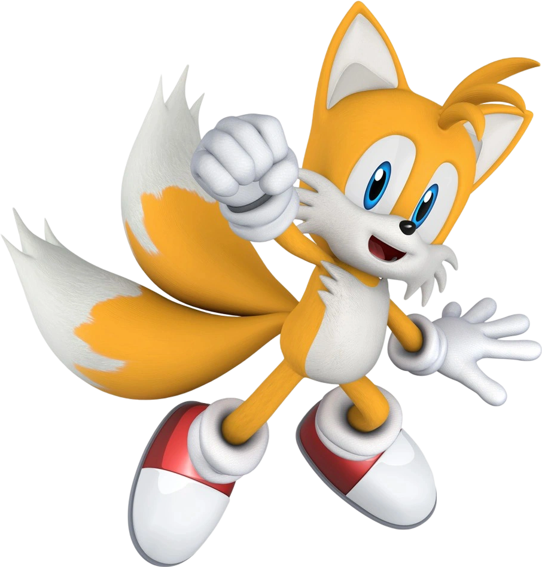 volait autour de l'Egg Saucer dans son avion
biplan, le Tornado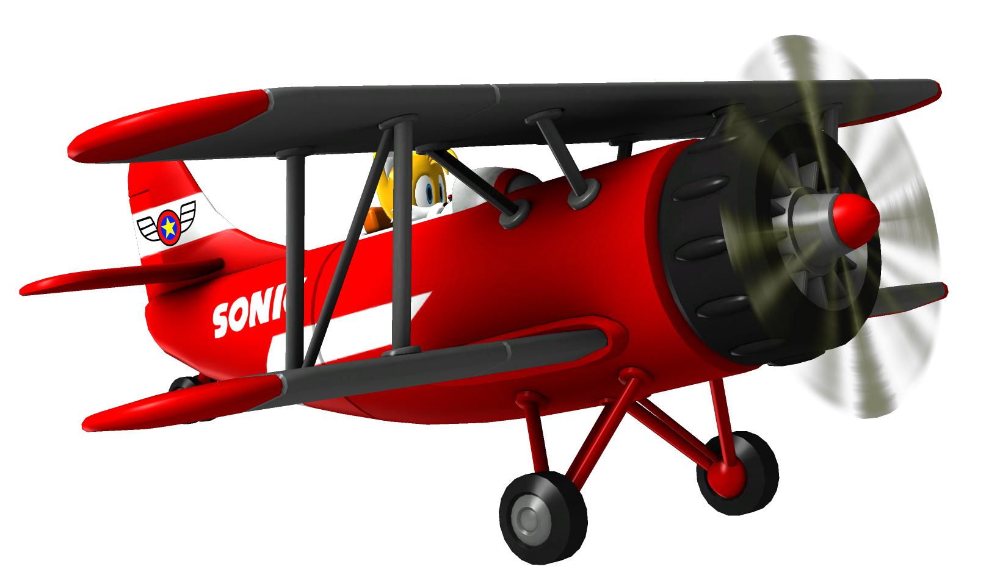. Après avoir déposé ses amis, il commença à
harceler le vaisseau pour attirer ses tirs de canons, tout en ripostant avec quelques salves bien placées. Un
tir du Saucer frôla l’appareil, le secouant violemment, mais Tails garda son sang-froid.
Dans une autre section du Saucer, Knuckles The Echidna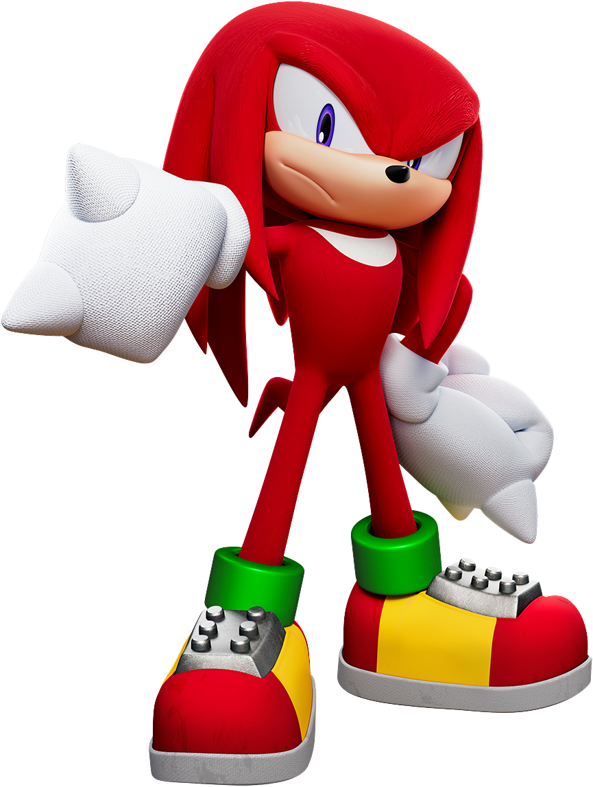 était une
véritable machine de destruction, réduisant les Badniks en miettes à coups de poings hérissés de pointes. Tandis
que l’armée à lui seul affrontait les hordes de robots, Amy Rose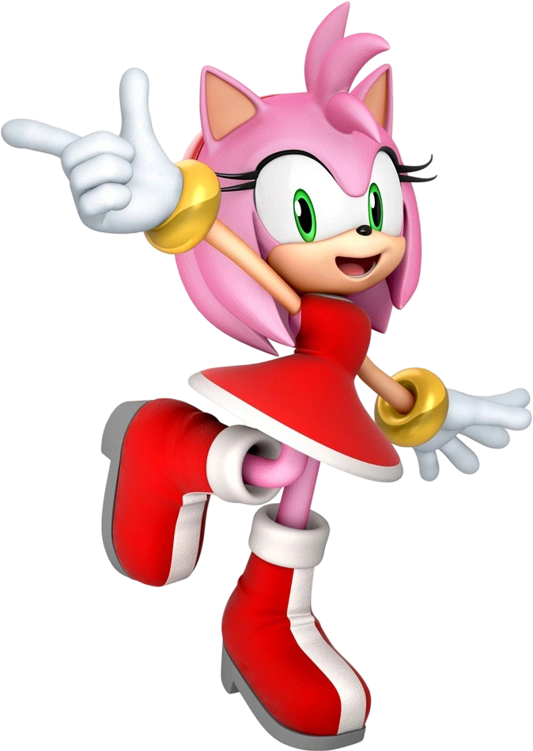 sautait d’un
œuf-pod à l’autre. Avec une précision redoutable, elle atterrissait sur les boutons jaunes des capsules, les
ouvrant pour libérer les petites créatures piégées à l’intérieur.
Amy : Allez-y ! Vous êtes libres !
Cria Amy aux animaux en fuite.
Amy : Knuckles, c’était le dernier ! On y va !
Knuckles écrasa un dernier Crabmeat avant de répondre :
Knuckles: On ne peut pas partir maintenant. On doit s’occuper d’Eggman !
Amy: Sonic s’en occupe ! Il va brouiller les plans du doc !
Insista Amy, les yeux brillants en pensant à son cher Sonic.
Mais Knuckles n’était pas si sûr de la réussite de Sonic.
Knuckles: Mais Eggman a les Émeraudes… !
Le Dr Eggman afficha un sourire maléfique en regardant la jauge de carburant du Rayon Genesis grimper. Il était
impressionné par la vitesse à laquelle la machine absorbait l’énergie des Émeraudes. À ce rythme, le Rayon
serait pleinement chargé avant même qu’ils n’atteignent une ville.
Avant qu’Eggman puisse décider s’il voulait ou non asseoir sa domination totale sans public pour l’admirer, les
portes de sa salle de commande explosèrent. La poussière retomba, révélant Sonic, aussi audacieux que jamais,
aussi bleu que de la peinture fraîche. Le hérisson souriait.
Eggman : Sonic...
Grogna Eggman.
Eggman : Cette fois, tu ne m’arrêteras pas !
Sonic : Je l’ai déjà fait plusieurs fois Crâne d'Oeuf.»
Répondit Sonic avec insolence.
Sonic : Pourquoi rompre avec une tradition ?
La réponse d’Eggman fut d’activer les armes de son Eggmobile. L’aéroglisseur s’éleva dans les airs, armé d’une
gigantesque pince sur le flanc gauche et d’un canon sur la droite.
Sonic se mit à courir partout dans la salle, esquivant les tirs lasers et les missiles, sautant de temps en temps
pour éviter la pince qu’Eggman lançait dans sa direction. Lorsque la pince finit par se coincer dans le mur
(résultat inévitable d’une visée trop enthousiaste), Sonic saisit l’occasion pour attaquer le corps principal de
l’Eggmobile. Il se roula en boule et tourbillonna à super-vitesse, percutant violemment l’avant du véhicule —
encore un duel entre Sonic le Hérisson et le Dr Eggman.
Mais quelque chose tourna mal.
La force de l’attaque de Sonic secoua Eggman dans son cockpit, le faisant appuyer sur certains contrôles par
erreur. Ces contrôles désactivèrent les sécurités empêchant les armes d’Eggman de viser les systèmes cruciaux,
et désormais, rien ne pouvait empêcher les missiles d’atteindre le moteur principal du Rayon Genesis. Le pauvre
Eggman ne s’en rendit compte qu’après avoir tenté de viser Sonic — qui était, comme toujours, bien trop rapide.
Eggman : Oh non !
S’écria Eggman alors que les machines crépitaient et émettaient des étincelles électriques.
Eggman : Non, non, non !
Sonic fit un salut moqueur et détala. Tandis que le moteur Genesis commençait à exploser, le Dr Eggman poussa un
dernier hurlement, aussi habituel que célèbre :
Eggman : JE DÉTESTE CE HÉRISSON !
Sonic courait, bien décidé à retrouver ses amis et à les faire sortir de l'Egg Saucer avant que la dernière
invention d’Eggman ne lui explose au visage. Mais Sonic sous-estimait le Rayon Genesis ; ce n’était pas un
simple canon laser. C’était quelque chose de bien plus grand, et en tant que tel, sa réaction aux dommages
dépassait de loin une simple explosion.
Il y eut un grand bruit, puis une lumière.
Il y eut un grand silence, puis la lumière disparut.
Et l'Egg Œuf avait disparu... de ce monde.
Première Nuit
Fuyuki, une petite ville du Japon. Sa seule notoriété provenait d’un événement tragique : le Grand Incendie de
Fuyuki, comme l’avaient baptisé les médias. Une partie de la ville avait été dévorée par les flammes, un acte
criminel digne de l’incendie de Rome. La cause exacte de l’incendie n’avait jamais été découverte — les versions
officielles parlaient d’une fuite de gaz — mais ceux qui savaient lire entre les lignes avaient remarqué que
plusieurs meurtres — certains aussi attribués à des fuites de gaz, d’autres non — avaient eu lieu dans les jours
précédant la catastrophe. De nos jours, ces mêmes personnes (toujours ignorées) constataient que des morts
mystérieuses — là encore mises sur le compte de fuites de gaz — se produisaient à nouveau, et ils se demandaient
s’il y avait un motif. Ils avaient raison.
Sonic ne savait rien de tout cela. Mais il savait — TRÈS BIEN — à quoi ressemblait le bitume, puisque son visage
venait d’y atterrir. Se relevant, il secoua la tête pour chasser les petits oiseaux qui tournaient autour de
lui.
Sonic : Ugh… Grosse gamelle…
Grogna Sonic.
Sonic : Qu’est-ce qui s’est passé… ?
Il regarda autour de lui. La ville qui l’entourait semblait anormalement calme. Soit la métropole faisait une
sieste collective, soit le hérisson venait d’atterrir dans une ville fantôme.
Sonic : Où est-ce que je suis ? » .
Demanda-t-il à voix haute. Il leva les yeux vers le ciel nocturne… et ne reconnut pas les étoiles. La destruction
de la machine d’Eggman l’aurait-elle envoyé dans un autre monde… ?
Sonic : J’espère que Tails, Knux et Amy vont bien…
Murmura-t-il.
Un cri déchira alors le silence au loin. Sortant aussitôt de sa rêverie, Sonic fonça en direction du bruit,
effectuant quelques figures de Parkour au passage, sautant de bâtiment en bâtiment avec agilité.
Dans une ruelle sombre (évidemment), un homme en combinaison bleue, armé d’une lance, se tenait au-dessus de sa
prochaine victime.
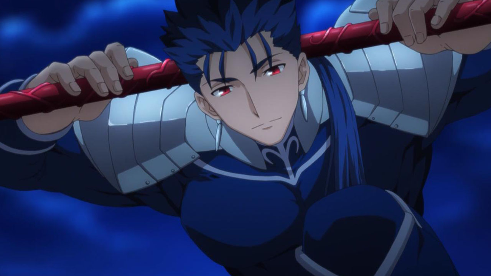
Le cadavre de la précédente, morte depuis à peine trois secondes, gisait non loin.
Homme : P-pitié…
Sanglotait l’homme, tremblant de peur.
Homme : Ne faites pas ça…
Lancer : Désolé, j’ai pas trop le choix.
Répondit Lancer, grattant l’arrière de sa tête avec sa main libre. De l’autre, il pointa sa lance vers la
poitrine de l’homme.
Lancer : Faut bien que je reprenne des forces.
Et il en avait grand besoin. Lancer avait été invoqué en tant que Servant — un Esprit Héroïque dont la présence
physique dans le monde était maintenue par un mage, son Master. Sept Servants, invoqués par sept Masters,
s’affrontaient pour un prix ultime.
Malheureusement, le Master actuel de Lancer ne disposait pas de Mana (énergie magique) suffisant pour le
maintenir correctement, forçant le Servant à se régénérer en drainant l’énergie vitale d’êtres humains.
Littéralement, son Master lui avait donné cet ordre. Et comme si cela ne suffisait pas, ce lâche refusait de le
laisser se battre ! Jusqu’à présent, la stratégie consistait à échanger quelques coups avec d’autres Servants,
balancer deux-trois piques verbales, puis battre en retraite. Même si le faux prêtre avait affirmé que cela
faisait partie d’un « plan de victoire », Lancer n’était pas convaincu. Quelle manière ennuyeuse de faire la
guerre…
Il leva sa lance, et s’arrêta. Tendant l’oreille, il crut entendre un bruit… ?
Sonic percuta Lancer de plein fouet avec un GROS WHAM, l’envoyant valdinguer contre un mur.
Sonic : Refusé !
Lança Sonic avec entrain. Puis, se tournant vers la victime potentielle :
Sonic : Ça va, monsieur ?
L’homme, tremblant et hébété, jeta un regard à Sonic, puis à Lancer, avant de s’enfuir en criant :
Homme : J’en peux plus de tout ça !
Sonic : De rien !
Lui lança Sonic en guise d’au revoir.
Sonic se baissa juste à temps — la lance de Lancer passa à quelques centimètres au-dessus de sa tête. Effectuant
une roulade, le hérisson se déplaça d’un mètre avant de se remettre debout d’un bond.
Sonic : Hé ! C’était quoi, ça ?!
Lancer rétracta son arme et adopta une posture de combat.
Lancer : Désolé pour ça. J’ai juste tendance à m’énerver quand quelqu’un interrompt mon repas.
Sonic : Repas ?
Répéta Sonic, confus — jusqu’à ce que ses yeux tombent sur le corps.
Ils s’écarquillèrent tandis qu’il prenait soudain conscience de toute l’horreur de ce qu’il venait d’empêcher… et
de ce qu’il n’avait pas pu empêcher.
Sonic :« C’est toi qui as fait ça ?
Demanda Sonic à Lancer, tentant de garder sa voix stable malgré la tempête qui faisait rage dans son esprit.
Lancer haussa les épaules, ce qui ne fit qu’attiser la colère de Sonic.
Lancer : Ouais. C’est pas très joli, je sais, mais faut bien que je trouve du Mana quelque part.
Sonic et Lancer commencèrent à tourner autour l’un de l’autre, sans jamais se lâcher du regard. Lancer arborait
un sourire enthousiaste — il n’avait aucune idée de ce que Sonic était (même s’il lui rappelait vaguement ces
espèces de chats dans ce café… comment ça s’appelait déjà ?), mais il sentait bien que cette créature possédait
bien plus de Mana et de puissance que les civils qu’il était obligé de traquer.
Sonic, lui, ne souriait pas. S’il avait connu Sonic, Lancer aurait compris que c’était très significatif. Le
hérisson avait d’abord cru interrompre un simple vol… mais il avait réalisé qu’il était tombé sur un meurtre —
le deuxième, et qu’il avait été trop tard pour le premier. Il ne laisserait pas ce type s’en sortir !
Sonic se projeta vers Lancer à une vitesse à laquelle le Servant ne s’attendait pas. Lancer tenta une estocade,
mais Sonic glissa sous la lame, sa vitesse le propulsant vers les jambes du lancier. Ce dernier sauta pour
éviter d’être déséquilibré. Sonic rebondit contre un mur, effectuant un saut en arrière vers le guerrier. Mais
Lancer s’était déjà retourné, lance prête. Sonic évita de justesse la lame, prit appui sur le manche, et balança
une série de coups de poing au visage de son adversaire.
Lancer recula en se frottant la mâchoire. Loin d’être furieux, il était plutôt impressionné par la performance du
hérisson.
Lancer : T’es un petit gars agile.
Commenta l’Esprit Héroïque.
Lancer : Mais je commence à piger ton style. C’est qu’une question de temps avant que je t’attrape.
Sonic fit tournoyer la lance rouge d’un air décontracté.
Sonic : Ça risque de prendre plus de temps que tu crois, mon pote.
Lancer blêmit. Il ne s’était même pas rendu compte qu’il avait lâché sa lance !
Lancer : Toi, espèce de… Rends-moi ça !
Lancer se précipita vers Sonic — mais le hérisson était déjà en train de filer hors de la ruelle, bien trop
rapide. Il s’arrêta un instant pour regarder derrière lui et lancer un regard moqueur au chien de garde.
Sonic : Attrape-moi si tu peux !
Cria-t-il avant de repartir à toute vitesse.
Lancer grogna et se lança à sa poursuite.
On ne plaisantait pas avec la lance d’un homme !
Dans une autre partie de Fuyuki, un trio de jeunes gens — techniquement, ils étaient quatre, mais le quatrième se
trouvait en forme astrale — marchait dans les rues, deux d’entre eux portant le troisième. Quelques heures plus
tôt, le lycéen et mage amateur Emiya Shirou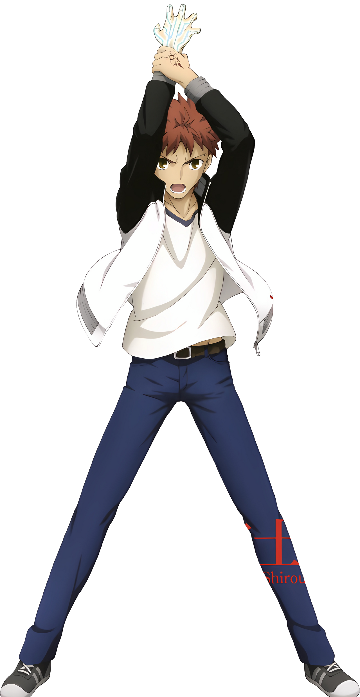 avait invoqué, par accident et sans le
vouloir, le Servant Saber,
une magnifique chevalière, qui lui avait sauvé la vie face à Lancer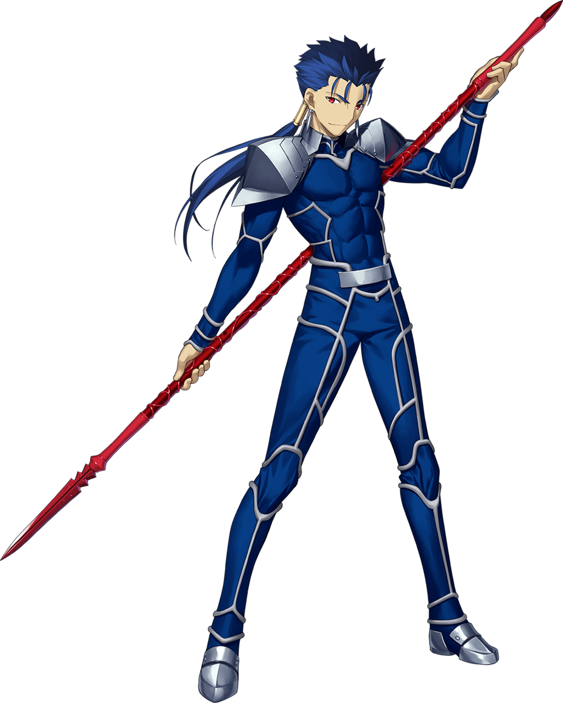.
Juste après, Saber avait attaqué Archer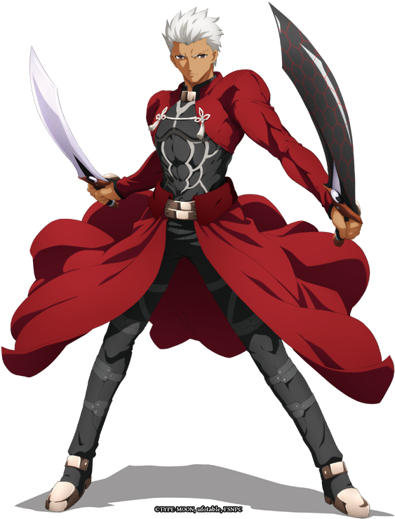, ce qui avait permis à Shirou de découvrir
que l’idole de son école, Rin Tohsaka, était
la Maîtresse d’Archer — et une mage bien plus accomplie que lui. Plutôt que de continuer le combat, Rin avait
conduit Shirou à l’église de Fuyuki pour qu’il s’enregistre en tant que participant à la Guerre du Saint Graal.
De la bouche du responsable de l’église, Kirei Kotomine,
Shirou apprit la vérité sur le Grand Incendie d’il y a dix ans : il s’agissait du résultat final de la
précédente Guerre du Graal. Réalisant que les morts actuelles n’étaient pas dues à des fuites de gaz, mais à un
Servant se nourrissant du mana de ses victimes, Shirou choisit de se battre aux côtés de Saber. Il n’était pas
intéressé par le Graal lui-même, mais ne pouvait pas laisser une autre tragédie se produire.
En quittant l’église, Shirou et sa petite équipe furent confrontés à Illyasviel von Einzbern, une fillette aussi
adorable que cruelle, dotée d’un Servant à la taille imposante : Berserker, un amas
de muscles incarnant le héros Héraclès. Saber et Archer combattirent, mais leurs attaques faisaient à peine
reculer l’Esprit Héroïque. Alors que Saber allait être frappée par la lame de Berserker, Shirou fit ce qui était
unanimement reconnu comme une très mauvaise idée : il s’interposa et prit le coup à sa place. Or, étant donné
que c’était sa vie qui permettait à Saber de rester incarnée dans le monde physique, ce sacrifice héroïque
était… plutôt inutile. Et pourtant, au lieu de mourir logiquement, Shirou survécut, son corps frôlant la
séparation en deux parties, mais encore en un seul morceau. Intriguée par les actions de Shirou et impressionnée
par les talents d’Archer, Illya déclara la fin de l’affrontement, promettant de revenir une autre fois.
À présent, Rin et Saber ramenaient Shirou chez lui, malgré les protestations d’Archer qui conseillait fortement à
sa Maîtresse d’abandonner « cet idiot » là où il était tombé. Si Shirou avait été conscient, il aurait sans
doute eu une réaction peu chevaleresque à cette remarque.
Rin jeta pour la énième fois un coup d’œil à Shirou. Même maintenant, son corps se régénérait à une vitesse
incroyable. C’était incompréhensible. Normalement, les gens meurent quand ils se font tuer. Elle savait ça. Et
pourtant, Shirou, un mage aux circuits magiques si faibles qu’ils en étaient quasiment inexistants, défiait
cette loi universelle. Cela n’avait aucun sens.
Mais Rin ignorait encore que le reste de cette guerre serait une attaque continue contre tout ce qu’elle croyait
savoir du fonctionnement du monde.
Les trois jeunes gens étaient presque arrivés au pont lorsqu’une forme bleue passa soudain devant eux à toute
vitesse, suivie par une seconde forme, également bleue. Les deux silhouettes virevoltaient et couraient tout
autour de Rin, Saber et Shirou, engagés dans un jeu de chat perché complètement désorganisé, digne d’un flipper
géant.
Rin et Saber observaient la scène, la tête commençant à leur tourner alors qu’elles tentaient de suivre ce
spectacle visuellement épuisant. Bien que les deux formes bougeaient trop vite pour être distinguées, on pouvait
reconnaître l’une d’elles à sa voix, tandis qu’il échangeait ce brillant dialogue avec l’autre silhouette :
Lancer : Reviens ici !
Sonic : Nan.
Lancer : Rends-le moi !
Sonic : Pas question.
Lancer : GRAAAAH !
Sonic : Trop lent !
Saber : Lancer ?
Demanda Saber, clignant des yeux. Elle se demanda si elle ne s’était pas cogné la tête durant le combat contre
Berserker. Une scène aussi absurde ne pouvait pas être réelle.
Lancer bondit vers un espace vide une nouvelle fois, grognant au sol alors que Sonic sortait de sa portée comme
une fusée. Puis il remarqua qu’il avait un public. Se redressant, il afficha un air décontracté ; il tenait à sa
réputation, et voulait la préserver.
Lancer : Yo, Saber.
Lança Lancer d’un ton détaché, hochant la tête vers Rin.
Lancer : Et Maître d’Archer.
Il jeta un coup d'œil à Shirou.
Lancer : Qu’est-ce qu’il a, lui ?
Shirou gémit. S’il avait été conscient, il aurait sûrement eu une réponse sarcastique en réserve.
Saber : Cela ne te regarde pas.
Répliqua Saber froidement, se tenant prête. C’était mauvais signe. Si Lancer décidait de se battre maintenant,
elle serait en grave désavantage. Attendez… Lancer pouvait-il même se battre ?
Saber : Où est ta lance ?
Lancer grimaça. Le sujet qu’il espérait éviter à tout prix.
Lancer : Euuuuuh…
POW !
Sonic retomba sur Lancer depuis les airs, écrasant le lancier dans le bitume sous ses baskets.
Sonic : C’est moi qui t’ai !
Déclara fièrement le hérisson.
Puis il remarqua le trio devant lui. Les yeux de Shirou — troubles, à peine ouverts — croisèrent brièvement ceux
de Sonic.
Sonic : Wow, qu’est-ce qui lui est arrivé ? Il va bien ?
Saber et Rin ne répondirent rien. Elles n’étaient pas sûres de comment répondre — ni même à quoi.
Lancer : Lâche-moi !
Hurla Lancer en se relevant brusquement.
Sonic tomba de son dos, roula sur plusieurs mètres pour éviter d’être blessé, et laissa échapper la lance rouge.
Lancer la ramassa rapidement et se remit en garde, la pointe dirigée droit vers la poitrine du hérisson. S’il
aimait un bon combat, ce jeu de poursuite à grande vitesse n’avait rien d’un duel digne de ce nom. Et son lâche
de Maître, qui refusait de le laisser combattre sérieusement, n’aidait en rien. Mais ce Sonic… ce n’était pas un
vrai guerrier. C’était un clown, un acrobate, qui traitait leur affrontement comme un numéro de cirque, évitant
le face-à-face direct, contrairement à Saber. Il se contentait de virevolter, de provoquer, n’attaquant que
lorsqu’on ne s’y attendait pas — comme à l’instant !
Il était temps de mettre fin à cette mascarade.
Lancer : Gae Bolg !
En tant que guerrier choisi pour combattre dans le Heaven's Feel, le Saint Graal avait accordé à Lancer des
pouvoirs et une arme issus de sa légende — un Noble Phantasme. Celui de Lancer, sa lance maudite, transperçait
infailliblement le cœur de sa cible, même si cela impliquait de briser la causalité elle-même. Une fois le nom
prononcé, la mort était certaine… sauf si la cible disposait d’une protection équivalente ou supérieure.
Mais là, quelque chose de nouveau venait d’apparaître.
La lance transperça Sonic — ou du moins, c’est ce que Lancer crut. Au lieu de voir le hérisson empalé, son corps
fut repoussé en arrière par la pointe de l’arme. Des anneaux dorés explosèrent de son torse, chutant au sol
avant de disparaître. Pas une goutte de sang.
Sonic : AAAARRGGHH !
Hurla Sonic. Bien que les anneaux de pouvoir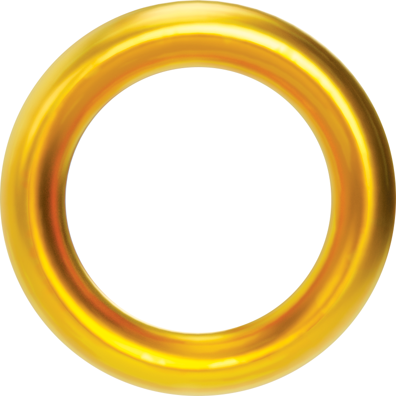 aient empêché son
corps d’être blessé, la douleur, elle, était bien réelle — plus atroce que toutes les fois où il s’était empalé
sur des pics.
Autour de Sonic, tous étaient figés, sidérés. Mais Lancer l'était encore plus.
Lancer : Quoi !? Comment t’as survécu à ça !?
C’était déjà humiliant que Shirou ait survécu à Gae Bolg, mais ce hérisson… il n’était même pas blessé !
Sonic : Tu... tu bougeais pas comme ça tout à l’heure… Comment… ?
Sonic secoua la tête, encore sonné, puis ses yeux se plissèrent.
Sonic : Attends… C’est pas ta vitesse. Tu utilises cette lance pour te téléporter, pas vrai ? Tu t’en sers
pour plier l’espace.
Lancer :Merde…
Lancer serra sa lance, prêt à réattaquer. Sonic n’était peut-être pas ensanglanté, mais il avait clairement été
affaibli par l’impact précédent. En répétant l’attaque, il finirait par l’avoir…
Lancer :Gae—
POW !
Lancer tituba en arrière, les pieds de Sonic venant s’écraser en plein dans son visage. Le hérisson ne comptait
pas lui laisser une deuxième chance. Alors que ses semelles étaient toujours pressées contre le visage du Chien
de Chasse, il tenta une nouvelle fois de s’emparer de la lance, mais Lancer réussit à le repousser.
Lancer : Arrête avec ça !
Grogna Lancer en balayant l’air avec sa lance. Sonic esquiva l’attaque avec une pirouette arrière qui le plaça
entre Lancer et le reste du groupe. Jetant un coup d’œil à Saber, Rin et Shirou, Sonic comprit qu’il ne pourrait
pas se battre sérieusement s’ils risquaient d’être blessés. Lancer, lui, n’avait pas ce genre de scrupules.
Il fallait éloigner le combat.
Esquivant une nouvelle attaque, Sonic fonça droit sur Lancer et lui décocha un coup de poing bien placé.
Sonic : Touché ! C'est toi le chat !
Et sur ce, il détala à toute allure, laissant Lancer hurler de frustration en lui courant après.
Puis, le silence revint. Un calme pesant, troublé seulement par la voix faible de Shirou, désormais assez rétabli
pour reprendre conscience.
Shirou : Qu’est-ce… qu’est-ce qui vient de se passer ?
Personne ne sut quoi répondre.
Sonic guida Lancer vers une autoroute. À cette heure avancée de la nuit, aucune voiture ne circulait sur la
route. Pour Sonic, c'était l'endroit parfait pour un affrontement musclé.
Les deux adversaires se poursuivaient le long de l'asphalte, s’échangeant des coups rapides, dans une sorte de
duel improvisé mêlant vitesse et tactique de harcèlement. Lancer tenta à plusieurs reprises de transpercer Sonic
avec sa lance, mais le hérisson esquivait chaque attaque avec aisance. Entre deux assauts, Sonic
contre-attaquait avec ses propres coups, utilisant notamment son attaque téléguidée dès qu’une ouverture se
présentait.
Techniquement, Sonic avait l’avantage : il réussissait à placer plus de coups que son adversaire. Mais
curieusement, les attaques du hérisson semblaient avoir peu d’effet sur Lancer. Au contraire, le Servant
devenait de plus en plus excité, galvanisé par le combat. Sonic comprit alors qu’il lui faudrait sortir
l’artillerie lourde.
Il s’arrêta brusquement, et Lancer, emporté par son élan, le dépassa de plusieurs centaines de mètres avant de
s’arrêter, confus. Il plissa les yeux pour tenter de voir ce que préparait cette étrange créature bleue à
l’horizon.
Lancer : Qu’est-ce qu’il manigance, encore ?
Pensa t-il.
Sonic fonça droit vers lui. Mais cette fois, il n’allait pas à sa vitesse habituelle : il allait beaucoup,
beaucoup plus vite.
C’était rare pour lui d’aller aussi vite — ùais surtout trop dangereux. Cela risquait de causer des dégâts
considérables, surtout dans des zones habitées. De plus, il fallait un espace dégagé et suffisamment long pour
atteindre une telle vélocité sans risque. Mais l’aspect le plus crucial, c’était le timing. Il fallait que Sonic
frappe exactement en passant devant Lancer, ou ce serait un échec total.
En voyant Sonic approcher à toute allure, les instincts de Lancer s’éveillèrent. Ce n’était pas une simple charge
— Sonic comptait tout donner dans cet assaut. Mais si Lancer parvenait à calculer correctement son coup… il
pourrait empaler le hérisson à l’aide de sa propre vitesse.
Mais alors que Sonic atteignait Lancer, quelque chose d’inattendu se produisit.
BOOM
L’air autour de Lancer explosa dans un vacarme assourdissant. Une onde de choc colossale balaya le Servant comme
une poupée de chiffon, l’envoyant valser hors de l’autoroute. Son corps percuta le sol à plusieurs reprises
avant de s’arrêter quelque part dans la pénombre. Ses tympans bourdonnant, son esprit embué, le Héros légendaire
Cú Chulainn eut une dernière pensée avant de sombrer dans l’inconscience :
Lancer : Je déteste ce hérisson.
Sonic, lui, arborait un large sourire en regardant Lancer voler dans les airs. Mais ce qu’il ne vit pas… c’était
le panneau qu’il venait de dépasser :
"Route Inachevée."
Un instant plus tard, Sonic remarqua que la route s’interrompait brusquement, formant une rampe improvisée.
Trop tard pour freiner.
Porté par l'élan de sa propre vitesse supersonique, le hérisson bleu fut projeté hors du bitume, s’élançant dans
les airs…
…Sa silhouette se détachant presque en ombre chinoise sur le fond lumineux de la lune…
…Avant qu’il ne commence à redescendre vers Fuyuki…
Emiya Shirou poussa un soupir. La nuit avait été extrêmement stressante. Même cuisiner, habituellement un bon
moyen pour lui de se détendre, ne parvenait pas à le calmer. Le poids de tout ce qu’il avait vécu ne cessait de
le hanter :
Il avait failli mourir face à Lancer, invoqué Saber par accident, découvert la Guerre du Saint Graal grâce à
Kotomine… et ensuite, il avait presque encore été tué, cette fois par le monstrueux Berserker. C'était un
miracle qu’il soit encore en vie.
Et puis, il y avait cette créature bleue.
Au début, Shirou avait cru à une hallucination provoquée par la douleur, mais après avoir (d’une manière ou d’une
autre) récupéré, Rin et Saber lui avaient confirmé que oui, un petit animal bipède en baskets avait réellement
affronté Lancer… et l’avait même projeté dans tous les sens.
Mais au moins, une bonne chose était sortie de tout cela :
Face à tous ces événements, Rin avait proposé une alliance temporaire pour faire face à Berserker, et à la
créature bleue (le mot "hérisson" avait brièvement traversé l'esprit de Shirou avant de s’évanouir). Shirou
était soulagé d’avoir son aide — il ne voulait pas du Graal, mais il savait qu’il lui faudrait du soutien pour
protéger les civils. Et si Rin maîtrisait la magie aussi bien qu’elle brillait à l’école, alors elle serait un
atout inestimable.
Shirou termina de cuisiner et servit à lui et à Saber un dîner tardif. Le repas était simple : un assortiment de
poisson avec du riz. Pourtant, Saber s’y plongea avec un appétit féroce, demandant des seconds services avant
que Shirou n’ait fini sa propre assiette.
Après que son Maître eut obéi, Saber déclara avec franchise :
Saber : Shirou, si j’avais eu un cuisinier comme toi à mon époque… les repas auraient été un rêve éveillé.
Shirou : Vraiment ?
Répondit Shirou, flatté.
Shirou : Comment étaient les cuisiniers de ton époque ?
L’air devint soudain glacial. L’expression de Saber se durcit aussitôt.
Saber : Pas aussi bons que toi.
Dit-elle avec un calme glacial.
Le ton de Saber était plus tranchant que l’épée qu’elle avait brandie plus tôt. À cet instant, Shirou jura
intérieurement de ne plus jamais aborder le sujet, et surtout, de toujours servir les repas à l’heure.
Le malaise passé, le dîner reprit son cours. Avant que Saber ne puisse sérieusement sermonner Shirou pour avoir
stupidement sauté devant l’épée de Berserker, un "Whump !" sonore retentit dehors.
Shirou : C’était quoi, ça ?
Demanda Shirou, se levant.
Saber était déjà sur pied.
Saber : Shirou, reste ici !
Ordonna-t-elle en se dirigeant vers le jardin. Mais à peine avait-elle franchi la porte qu’elle sentit la
présence de son Maître sur ses talons. Elle soupira intérieurement.
Dehors, ils virent ce qui avait causé le bruit.
Étendu face contre terre, on retrouvait… l’adversaire de Lancer.
Shirou et Saber emmenèrent Sonic dans le dojo du domaine Emiya et attendirent qu’il se réveille. Ils n’eurent pas
à patienter longtemps. Les paupières de Sonic frémirent légèrement, puis il se redressa. Saber et Shirou se
raidirent, incertains de ce qui allait suivre.
Sonic : Ugh… Où est-ce que je suis… ? »
Demanda Sonic en regardant autour de lui d’un air vaseux. Lorsqu’il vit le Maître et le Servant, il lui fallut
quelques secondes pour se rappeler les avoir déjà vus, et dans quel contexte.
Sonic : Hé, je vous ai vu tous les deux, vous êtes…
Shirou : Tu es dans la salle d'entraînement de la maison de ma famille.
Expliqua Shirou.
Shirou : On t’a trouvé évanoui dans mon jardin et on t’a amené ici.
Sonic : Oh, cool. Merci pour ça.
Dit-il avant de faire une pirouette arrière pour se remettre debout.
Sonic : Moi, c’est Sonic. Sonic The Hedgehog, au fait.
Shirou : Emiya Shirou...
Répondit le rouquin, en désignant Saber.
Shirou : Et voici Saber.
Saber : Enchantée de faire ta connaissance.
Salua Saber d’un ton formel en hochant la tête.
Saber : Sonic… pourrais-tu nous expliquer comment tu es apparu sur cette propriété ?
Sonic : Eh bien, vous avez vu le type que j’étais en train de bastonner, non ?
Commença Sonic.
Sonic : Quand j’ai vu que les coups normaux ne lui faisaient rien, j’ai décidé de lui balancer un Sonic Boom.
Le problème, c’est que j’allais trop vite, et j’ai fini par m’envoler hors de l’autoroute.
Shirou : Qu’est-ce que tu faisais sur l’autoroute ?
Demanda Shirou.
Sonic : Moins de dégâts matériels.
Expliqua Sonic, en souriant d’un air espiègle.
Sonic : Tu vois, quand j’appelle ça un Sonic Boom, c’est pas juste de l’égo… enfin pas trop.
Shirou le regarda, abasourdi par ce que Sonic sous-entendait.
Shirou : …Tu peux te déplacer assez vite pour franchir le mur du son ? Mais qui es t-il au juste ?
Sonic : Ouais, mais j’évite de faire ça en ville. Pour toutes ces vitres brisées, tu vois le tableau ?
Un bref silence s’installa, pendant lequel le Maître et la Servant tentèrent de digérer l’information.
Saber : Qu’est-ce que tu es, Sonic ?
Demanda Saber, exprimant tout haut ce que Shirou pensait.
Saber : Je n’ai jamais vu de créature comme toi dans ce monde, et tu es capable de tenir tête à un Servant à
armes égales.
Sonic : Dans ce monde ?
Répéta Sonic. Il croisa les bras et tapota du pied, songeur. Après un moment, il se frappa le front.
Sonic : Awww, mec ! J’ai dû être projeté dans une autre dimension ! Je déteste quand ça arrive !
Voyant la confusion sur les visages de Shirou et Saber, Sonic leur raconta son aventure à bord de l’Egg Saucer.
Mais une fois son récit terminé… leur confusion n’avait pas diminué. En réalité, elle n’en était que plus
grande.
Shirou : Mais, comment une machine pourrait-elle t’envoyer de ton monde jusqu’au nôtre ? »
Demanda Shirou, tentant de comprendre. À sa connaissance, voyager entre les univers relevait d’une des rares
Vraies Magies, un type de sorcellerie que la technologie ne pouvait tout simplement pas reproduire.
Sonic : Les Chaos Emeralds.
Répondit Sonic.
Sonic : Ce sont des gemmes avec toutes sortes de pouvoirs. Il y en a sept, et si tu les rassembles toutes, tu
libères un pouvoir ultime. Eggman les utilisait pour alimenter son Rayon Genesis.
Shirou : Incroyable… »
Fut tout ce que Shirou réussit à dire. Un peu plus tôt, il aurait dit que c’était impossible, mais après tout ce
qu’il avait vu cette nuit, et surtout en parlant avec Sonic, il ne pouvait plus se permettre ce genre de
scepticisme. Sa logique avait été brûlée jusqu’à la racine.
Sonic : Maintenant, c’est à moi de poser quelques questions,
Déclara Sonic.
Sonic : Ce Servant dont vous parliez… je suppose que vous ne parliez pas d’un majordome ou d’une femme de
ménage.
Il y eut un bref silence, tandis que Shirou et Saber réfléchissaient à leur prochaine décision. Finalement, ce
fut Shirou qui le rompit :
Shirou : Un Servant est un Esprit Héroïque, un guerrier légendaire invoqué par la magie dans le monde physique
pour combattre au nom du Saint Graal.
Saber lança un regard surpris à son Maître.
Saber : Shirou— !
Shirou : Saber, il vaut mieux qu’il soit au courant.
Répondit Shirou.
Shirou : Il a déjà affronté Lancer et l’a battu – ça ne changera rien de lui dire toute la vérité.
Saber : Mais…
Shirou : Je connais les règles, et c’est justement pour ça qu’on doit l’informer.
Expliqua Shirou.
Shirou : Sinon, il risque de révéler l’existence de la Guerre par accident.
Saber fronça les sourcils, mais ne répondit pas. Elle n’aimait pas l’admettre, mais Sonic s’était nettement mieux
débrouillé face à Lancer qu’elle-même durant leur brève escarmouche. Cependant, il semblait arborer une attitude
insouciante, nourrie par une certaine arrogance – et ce genre de comportement menait invariablement à la
catastrophe. Heureusement, Sonic et Lancer s’étaient battus de nuit. Si leur duel avait eu lieu en plein jour,
il aurait été impossible de dissimuler leur existence ; rien que l’apparence de Sonic aurait pu révéler
l’existence de la Magie. Il devait être mis au courant afin d’agir avec plus de discrétion.
Et ainsi, Shirou expliqua à Sonic ce qu’il savait de la Magie, ce qu’il avait appris de Kotomine au sujet de la
Guerre du Saint Graal.
Sonic : Donc ce gars, Lancer, c’est quoi ? Un genre de fantôme magique ?
Demanda Sonic, tapotant du pied.
Shirou : Si ça t’aide à mieux comprendre…
Répondit Shirou.
Shirou : Les Servants peuvent être tués, et à part les capacités spéciales que leur donne leur légende, ils
ont les mêmes faiblesses que les humains.
Sonic : Ok, mais pourquoi tout ce truc de noms de code ?
Saber : Le Saint Graal donne aux Esprits Héroïques invoqués en tant que Servants des pouvoirs et capacités
basés sur leur légende,
Expliqua Saber.
Saber : Cela inclut aussi leurs faiblesses. Si quelqu’un connaît la légende d’un Servant, il peut aussi
deviner ses forces et ses points faibles.
Sonic : Genre, si tu sais que tu te bats contre Achille, tu sauras
qu’il faut viser son talon ? Demanda Sonic.
Saber : Exact.
Acquiesça Saber, ravie de voir que Sonic comprenait.
Saber : C’est pour cela que je suis connue uniquement sous le nom de Saber durant cette Guerre. Il est dans
mon intérêt de garder mon véritable nom secret.
Sonic se frotta le nez en réfléchissant.
Sonic : Donc, y’a un moyen de deviner la légende d’un Servant ? Ou bien on doit juste leur demander gentiment
?
Saber : Il suffit d’être observateur.
Répondit Saber.
Saber : Si connaître leur nom peut nous permettre de déterminer leurs capacités, alors l’inverse est aussi
vrai. Cela dit, on pourrait avoir de la chance et tomber sur un Servant trop sûr de lui qui révèlera son nom
pour faire bonne impression.
Elle ne put s’empêcher de penser au Rider de la Quatrième Guerre, qui s’était vanté ouvertement d’être Alexandre le Grand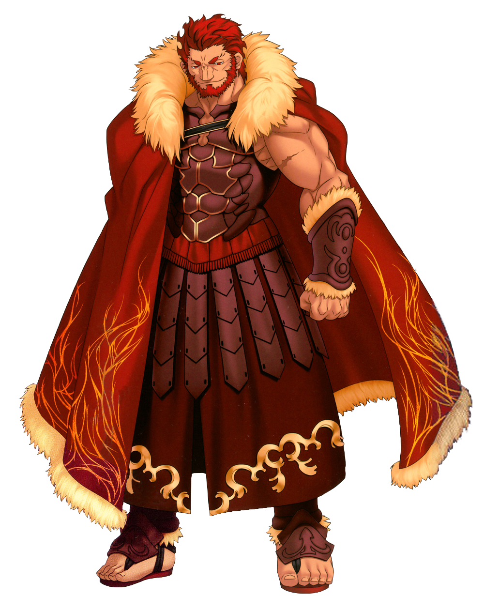. Il était peu probable qu’un tel fanfaron se
manifeste cette fois-ci, mais comme elle l’avait déjà vu, le monde pouvait parfois réserver des surprises
inattendues.
Sonic poussa un petit grognement et ferma les yeux.
Sonic : Mais est-ce que ces Servants sont vraiment des héros ? J’ai surpris Lancer en train d’essayer de tuer
quelqu’un,
Dit-il, ouvrant légèrement les yeux pour regarder le sol.
Sonic : Et ce, après avoir déjà éventré un autre type…
Shirou vit la douleur dans les yeux de Sonic. C’était la même douleur qu’il ressentait lui-même chaque fois qu’il
entendait parler des « morts mystérieuses » aux infos. À cet instant, Shirou ressentit une sorte de lien avec
cette créature anormale venue d’un autre monde.
Saber : Sonic, tu dois comprendre que même si les Esprits Héroïques sont célébrés en chansons et en légendes
comme des parangons de vertu, ils étaient, ou sont encore, des êtres humains.
Expliqua Saber.
Saber : Et ils ont vécu dans des époques turbulentes, constamment entourés par la mort. Je comprends que tu
réprouves cela, mais pour certains de ces Esprits, la mort de civils dans la quête du Graal est une
conséquence négligeable.
Sonic : Mais pourquoi ?
Demanda Sonic.
Sonic : Les Servants sont censés se battre entre eux, non ? Quel est l’intérêt de s’en prendre à des gens
normaux ?
Shirou : J’en ai parlé avec un autre Maître que je connais.
Ajouta Shirou. Il décida de ne pas mentionner Rin pour l’instant. Elle allait probablement piquer une crise en
apprenant qu’il avait parlé de la Guerre à un « étranger ».
Shirou : On pense que c’est parce que le Maître de Lancer ne peut pas lui fournir assez de man. Chaque Servant
est censé recevoir du mana de son Maître, mais certains Maîtres ne sont pas assez puissants pour leur en
donner suffisamment, surtout pour utiliser leur Noble Phantasme.
Shirou : Je sais que moi, je ne le suis pas.
Sonic : Ah oui, le coup de l’arme magique.
Dit Sonic en frottant sa poitrine.
Sonic : Je crois que j’ai un bleu là où Lancer a essayé de me transpercer.
C’était le moment idéal pour Saber de poser la question qui la préoccupait le plus.
Saber : Sonic, comment as-tu survécu au Noble Phantasme de Lancer ?
Sonic plongea sa main dans le gant de sa main gauche et en sortit un objet doré.
Sonic : Des Anneaux de Pouvoir. Ces petits trucs te protègent de n’importe quel dégât, surtout ceux venant
d’objets pointus.
Il lança un Anneau à Saber, qui l’examina attentivement. L’objet était petit, mais elle pouvait y percevoir une
certaine énergie. Si elle ne l’avait pas vu de ses propres yeux, elle n’aurait jamais cru qu’un simple anneau
puisse stopper le Gáe Bolg de Lancer. Elle le tendit à Shirou pour qu’il puisse l’observer. Ce dernier se dit
qu’il aurait bien aimé en avoir un lors des attaques de Lancer et Berserker — à cette pensée, la zone blessée
par l’épée de Berserker se remit à le lancer, et Shirou tressaillit légèrement.
Shirou : Jusqu’à quel point ça protège, un Anneau ?
Demanda Shirou, émerveillé.
Sonic : Un seul suffit contre n’importe quoi.
Répondit Sonic.
Sonic : Mais dès que tu prends un coup, l’anneau tombe de là où tu le portais et disparaît après quelques
secondes. Plus t’en as, plus tu as de chances d’en récupérer quelques-uns.
Un seul…
Shirou : Tu me permets de garder celui-là ?
Demanda Shirou en prenant l’Anneau que Saber lui tendait.
Sonic haussa les épaules.
Sonic : Pas de souci. J’en ai encore douze. En fait…
Il lança un deuxième Anneau à Saber.
Sonic : Tiens, tu peux en avoir un aussi. Un peu d’assurance, ça fait jamais de mal, pas vrai ?
Saber referma lentement sa main sur l’Anneau.
Saber : …Non, en effet, ça ne fait pas de mal.
Même si elle n’aimait pas avoir à dépendre du pouvoir d’un autre, après son échec durant la Quatrième Guerre et
la perte de son fourreau, Saber ne voulait prendre aucun risque. Et si Shirou continuait à se jeter au-devant du
danger comme un inconscient, il allait bien avoir besoin d’une protection supplémentaire.
Bien que si son intuition était correcte…
Sonic : Hé, y’a un truc qui me turlupine.
Intervint Sonic
Sonic : Si tous les Maîtres de cette Guerre sont des sortes de sorciers—
Shirou : Mages.
Corrigea Shirou automatiquement.
Sonic : Hein ?
Shirou : Les Maîtres sont des mages, pas des sorciers.
Expliqua Shirou.
Shirou : Les mages utilisent la Thaumaturgie, une forme de magie qui peut, en théorie, être reproduite par la
technologie. Un sorcier, lui, peut utiliser l’un des Vrais Magies—
Sonic leva la main.
Sonic : Ok… j’m’en fiche un peu, en vrai. Ce que je veux savoir, c’est : est-ce que toi, tu peux faire de la
magie ?
Shirou hocha la tête, un peu frustré que son exposé ait été interrompu.
Shirou : Oui, je suis un mage… enfin, pas un très bon. J’ai invoqué Saber par accident. Et la moitié du temps,
les sorts que je connais ne marchent pas.
Sonic tapota son pied en réfléchissant.
Sonic : Donc… quel genre de magie tu peux faire ?
Shirou : Juste trois types.
Répondit Shirou, en levant trois doigts.
Shirou : Renforcement, Analyse Structurelle et Projection.
Sonic : Quoi, quoi et quoi ? »
Shirou : Le Renforcement consiste, en gros, à améliorer un objet physique. Plus précisément, c’est pousser
ses propriétés de base au maximum,
Expliqua Shirou.
Ça lui faisait bizarre de parler de ça avec quelqu’un qui n’y connaissait rien. Avant de découvrir que Rin était
aussi une mage, la seule autre personne à qui il en avait parlé était son père adoptif décédé, Kiritsugu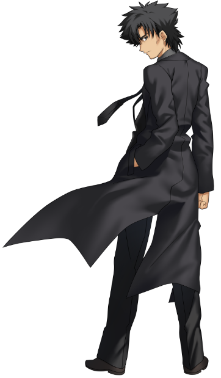.
Shirou : Par exemple, je peux rendre un journal aussi dur qu’une barre d’acier, ou rendre un couteau plus
tranchant, ou même améliorer ma vue.
Sonic fit un petit « hmm », puis disparut dans un éclair bleu. Moins d’une seconde plus tard, il était de retour,
tenant quelque chose dans la main.
Un journal roulé.
Sonic : Tu peux me montrer ça ?
Disait le hérisson.
Shirou prit le journal et se concentra.
Shirou : Trace On.
Comme toujours lorsqu’il pratiquait la Thaumaturgie, il ressentit cette sensation désagréable, comme si on
enfonçait une barre de métal chauffée à blanc dans sa colonne vertébrale lorsqu’il activait ses Circuits
Magiques. Cette fois-ci, toutefois, il perçut un léger bourdonnement, qu’il ignora à peine…
Je .. … …. .. .. ép..e…
Shirou tendit le journal à Sonic.
Shirou : Essaie de le plier.
Sonic s’exécuta. Le journal se plia facilement entre ses doigts. Il leva un sourcil, mais son visage resta
neutre. Un peu plus loin, Saber baissa la tête.
Shirou : ...J’ai dit que j’étais pas très bon en magie.
Se défendit Shirou, un peu honteux.
Sonic : Et donc… les deux autres trucs ?
Demanda Sonic.
Toujours embarrassé par son échec, Shirou répondit :
Shirou : Analyse Structurelle et Projection. Le premier, c’est comme ça sonne — j’utilise ma magie pour
analyser un objet physique : ce dont il est fait, son histoire, ce genre de choses.
Sonic : Mouais… ça a l’air un peu barbant.
Nota Sonic.
Shirou : C’est en fait ma magie la plus utile.
Se défendit Shirou.
Shirou : J’ai pu réparer toutes sortes de trucs grâce à… »
Il s’interrompit en voyant le regard peu impressionné de Sonic. Il décida de changer de sujet.
Shirou : La Projection, c’est la matérialisation d’un objet physique dans le monde. En gros, c’est créer
quelque chose à partir de rien.
Le visage de Sonic s’illumina.
Sonic : Ça, c’est stylé ! Tu claques des doigts si t’as besoin d’un truc et pouf, il est là ?
Shirou : C’est… pas aussi simple que ça en a l’air.
Répondit Shirou d’un ton un peu défait.
Shirou : Je n’ai jamais été doué pour ça. Et mon mentor disait toujours que c’était un talent inutile de toute
façon.
Sonic : Pourquoi ?
Shirou poussa un soupir.
Shirou : Tout ce que le sort crée est plus faible que l’original, et son existence est instable. Ça ne sert à
rien.
Sonic : Pff, pas étonnant que tu sois nul avec une mentalité pareille.
Grogna Sonic.
Sonic : Écoute, je connais rien à la magie, mais je sais que tu peux pas progresser si t’as pas un minimum de
confiance en toi. Je sais que ça fait cliché, mais tu peux accomplir beaucoup de choses si tu crois en
toi.
Shirou allait protester, dire à Sonic qu’il était trop idéaliste… mais il n’y arriva pas. Il jeta un regard vers
Saber, qui le fixait à présent avec une intensité froide. Son visage restait neutre, mais elle semblait…
chercher quelque chose ? Shirou détourna les yeux vers Sonic, l’air perdu.
Sonic : J’viens de dire que t’étais nul, mec.
Lui rappela Sonic.
Sonic : Tu vas vraiment laisser passer ça ?
Et c’est à ce moment-là que Shirou comprit pourquoi il ne pouvait pas ignorer Sonic. Il rêvait de devenir un
héros un jour, mais ses aspirations n’étaient pas prises au sérieux par ses camarades. « Ça n’existe plus, » lui
disaient les plus moqueurs. Même ses amis proches considéraient ses objectifs comme enfantins. Mais là, devant
lui, se tenait un héros. Il avait peut-être l’air d’un personnage sorti d’un dessin animé américain, et une
arrogance trop proche de celle de son ancien ami Shinji Matou, mais dans les yeux de Sonic, Shirou voyait une
force, une conviction… une volonté semblable à la sienne.
Et maintenant, ce héros venu d’un autre monde cherchait à tester sa force. Shirou ne pouvait pas se permettre de
passer pour un minable !
Shirou : …Non, je ne suis pas nul. »
Déclara le Maître de Saber. Mais que projeter ? Puisqu’ils étaient dans un dojo, il opta pour un sabre
d’entraînement en bois, un bokken.
Tendant la main et activant ses circuits magiques, Shirou récita son incantation :
Shirou : Trace On.
Dans le jardin arrière du domaine Emiya se trouvait un cabanon. De l’extérieur, il n’avait rien de
particulièrement intéressant. Actuellement, Shirou l’utilisait à la fois comme remise pour divers travaux de
réparation, et comme lieu d'entraînement à son art magique. Au centre du sol du cabanon, entouré de piles
d’objets réparés, un cercle magique avait été tracé. Il avait été formé par l’ancien occupant du domaine.
Et à présent, il brillait.
Sous les planches du sol, il était là, attendant simplement d’être découvert. Le joyau jaune n’était apparu que
quelques heures plus tôt, mais on aurait dit qu’il avait toujours été là.
Sa lumière commença à vaciller.
Shirou ressentit soudain quelque chose comme une explosion au fond de lui. Ce fut suivi d’une sensation
comparable à ses nerfs qui prenaient feu — non, pas comme s’ils brûlaient, mais comme s’ils devenaient eux-mêmes
du feu. Mais ce qui arriva ensuite fut bien, bien pire.
Shirou : AAAARRRGGHH ! »
Hurla Shirou de douleur alors que des épées — de l’énergie jaune en forme d’épées — commencèrent à jaillir de son
corps. Saber et Sonic se précipitèrent à son secours, seulement stupéfaits une demi-seconde par cet événement.
Et aussi soudainement que cela avait commencé, cela cessa. Les épées d’énergie jaune disparurent et Shirou
s’effondra. Saber et Sonic le rattrapèrent avant que son corps ne touche le sol, et après l’avoir délicatement
posé, ils virent à quel point son état était grave. Contrairement à l'immense entaille que Berserker lui avait
infligée auparavant, les blessures actuelles de Shirou étaient moins nettes mais bien plus nombreuses. Malgré sa
rage, Berserker avait été efficace en tentant de le trancher en deux. Brutal, mais professionnel. Cette fois-ci,
cependant, le corps de Shirou ressemblait à une vraie boucherie (sans mauvais jeu de mots), couvert de trous
sanglants et malformés… qui étaient en train de se refermer ?
Sonic était flou à force de trépigner à la vitesse du son.
Sonic : Ohnonononon ! Où est l’hôpital ?! Je vais le transporter fissa là-bas !
Saber : Sonic !
Ordonna Saber.
Saber : Il y a une trousse de secours dans la cuisine, sous l’évier !
Sonic avait disparu dès que Saber avait prononcé « cuisine », et était de retour avant qu’elle ne termine « évier
». Il tenait aussi un téléphone dans l’autre main, ainsi qu’un rouleau d’essuie-tout coincé sous le bras. Les
deux se mirent à soigner Shirou, tandis que Sonic n’arrêtait pas de parler :
Sonic :
…est-ce-que-le-numéro-d’urgence-est-bien-le-9-1-1-ici-ce-type-a-besoin-d’aide-peut-être-qu’on-peut-bricoler-un-fauteuil-roulant—
»
Saber : Ce ne sera pas nécessaire.
Coupa Saber en appliquant du désinfectant. Elle vit Shirou grimacer de douleur, soulagée qu’il ait encore assez
de force pour réagir.
Sonic : Qu’est-ce que tu racontes ? Shirou est en train de… guérir ?
Sonic s’arrêta, stupéfait par ce qu’il voyait. Mais il ne pouvait pas nier l’évidence : la chair déchirée de
Shirou était en train de se reconstituer !
Sonic : Mais… comment ?
Sonic ferma les yeux et tapota sa tempe.
Sonic : Ah, oui, magie.
Oui, c’était bien de la magie, et plus précisément une magie que Saber connaissait trop bien. Elle n’avait plus
aucun doute. La seule manière pour un mage aussi amateur de l’avoir invoquée, et maintenant de survivre à de
telles blessures, était qu’il possédait Avalon — son fourreau perdu. Le fait que Shirou partage le même nom de
famille que son ancien maître, Kiritsugu (aussi connu sous le nom de « l’assassin double-face qui lui avait volé
la victoire alors qu’elle la touchait du doigt »), renforçait encore plus cette idée.
Mais pourquoi Avalon agissait-il avec une telle puissance, comme si son effet avait doublé ? L'Anneau de Pouvoir
que Sonic avait prêté à Shirou amplifiait-il les effets du fourreau ?
Quoi qu’il en soit, Sonic et Saber ne pouvaient rien faire de plus qu’attendre que Shirou se régénère, l’aidant
du mieux qu’ils pouvaient. Une demi-heure passa avant que Shirou n’ouvre les yeux.
Shirou : Saber… ?
Murmura le jeune mage.
Saber : Shirou. »
Le visage stoïque de Saber s’adoucit légèrement. Elle était à genoux près de lui, alors qu’il était allongé sur
le sol du dojo. De l’autre côté se trouvait Sonic, assis par terre. Il avait l’air coupable — il se sentait
probablement responsable de l’incident, après avoir incité Shirou à lancer le sort.
Sonic : Tu tiens le coup, mec ?
Demanda timidement le hérisson, tendant la main vers Shirou.
Shirou : Ouais...
Répondit Shirou. Voyant l’expression de Sonic, il ajouta.
Shirou : Je sais pas ce qui s’est passé. Le sort n’a jamais fait ça avant.
Sonic esquissa un sourire sans joie.
Sonic : Eh bien, euh… heureusement que tu peux guérir, hein ?
Shirou : …Ouais, heureusement.
Shirou sentit un sourire naître à son tour. Son corps le faisait encore souffrir par endroits, mais la douleur
s’estompait rapidement. Et désormais, il savait que lui et Saber avaient un nouvel allié dans cette Guerre du
Saint Graal.
Pendant ce temps, le regard de Saber se porta vers les Sceaux de Commandement sur la main de Shirou. Ils
symbolisaient le lien entre eux deux, et permettaient à Shirou de donner trois « Ordres Absolus », des
commandements transmis par le rituel qu’elle ne pouvait pas désobéir. C’était peut-être son imagination, mais il
lui semblait que les sceaux brillaient…
Saber :Cette guerre sera très différente des autres.
Pensa l’Esprit Héroïque.
Elle était loin de se douter à quel point elle avait raison.
Ayant constaté à la fois que Shirou n’allait pas mourir et qu’une alliance avec l’Équipe Saber avait été formée,
Rin décida qu’il était temps, pour elle et Archer, de rentrer pour la nuit. Trop de choses s’étaient produites
ce soir, et ils avaient tous les deux besoin de faire le point sur ce qu’ils avaient vu. La rencontre avec Illya
et son monstre de Servant avait été suffisamment terrifiante, mais voir cette étrange créature bleue se battre
contre Lancer avait complètement bouleversé tout ce qu’elle s’attendait à vivre dans la Guerre du Saint Graal —
mais pour des raisons bien différentes.
Rin ne pouvait que supposer que l’adversaire de Lancer — quoi que ce fût — était un esprit animal, ou peut-être
un familier invoqué par le Caster de cette guerre. Elle devrait consulter la bibliothèque familiale à ce sujet,
et espérer y trouver une réponse. Elle se rappela les horribles monstres invoqués par le Caster de la Quatrième
Guerre, et frissonna légèrement en repensant à la façon dont elle avait failli être tuée, à la fois par ces
bêtes et par le Maître tordu de ce Caster. Elle espérait simplement que cette fois-ci, le Caster — et son Maître
— seraient d’un caractère un peu plus stable.
De son côté, Archer avait une autre préoccupation. Il était un Esprit Héroïque particulier, venant du futur.
Invoqué à travers le temps par la tentative de Rin de convoquer « le Servant le plus puissant » (un rituel qu’il
croyait avoir réussi, de façon privée mais arrogante), Archer espérait changer son futur misérable en
assassinant son propre moi du passé, croyant que ce paradoxe le ferait disparaître. Tout serait préférable à
l’enfer vivant dans lequel ses idéaux naïfs l’avaient plongé.
Mais l’apparition de ce type bleu hérissé, en baskets, venait de mettre un sacré coup de frein à ses espoirs. Les
souvenirs qu’il avait de la Cinquième Guerre étaient peut-être vagues, mais il était presque certain qu’une
telle créature n’y était jamais apparue. Soit son invocation avait modifié la ligne temporelle bien plus qu’il
ne le pensait, soit il se trouvait dans un univers alternatif complet.
Avant qu’Archer ne puisse pousser plus loin ses réflexions, il vit une colonne de fumée au loin — exactement dans
la direction du manoir Tohsaka !
Archer : Rin, reste ici !
Ordonna Archer, fonçant en avant avant que sa Maître ne puisse répondre.
En renforçant ses jambes, il gagna rapidement du terrain et vit, heureusement, que la grande maison de style
occidental n’était pas en feu. Les terrains derrière la maison, en revanche, étaient totalement dévastés. Et au
centre de ce champ de ruines, un véhicule endommagé, de la fumée s’échappant là où devait se trouver le moteur.
Rin : Archer, qu’est-ce qu’il y a ?
Demanda Rin par leur lien télépathique.
Rin : Qu’est-ce qui se passe ?
Archer : Quelqu’un a écrasé un avion dans ton jardin.
Rin :Quoi ?!
C’était un biplan rouge, de haute technologie. Sur son flanc était écrit « SONIC », et sur sa dérive, un dessin
représentant une étoile dans un anneau rouge ailé. Les ailes de l’appareil s’étaient détachées lors du crash, et
des morceaux de métal étaient éparpillés un peu partout dans la cour. Et dans le cockpit, affaissée et
inconsciente, se trouvait une petite créature poilue… une sorte de petit renard humanoïde.
Avec deux queues.
Archer :Un kitsune ?
Pensa Archer.
Contrairement à ce qu’on voit à la télévision, entrer dans une autre dimension n’était pas un tour de
passe-passe. Selon la méthode employée, une telle action pouvait provoquer des vibrations que n’importe qui
pouvait ressentir. Puisque cela s’était produit pendant leur affrontement contre Berserker, ni l’Équipe Saber ni
l’Équipe Archer n’avaient senti le choc des mondes se déchirant pour laisser Sonic et ses compagnons entrer. En
revanche, les autres mages de Fuyuki avaient parfaitement compris qu’il s’était passé quelque chose d’énorme. Le
simple fait que, pendant un bref instant, toute la magie dans la ville ait été renforcée leur avait suffi pour
envoyer toutes sortes de familiers et de divinations enquêter sur ce phénomène.
À la porte du temple Ryuudou, le Servant Assassin soupira. Il avait
ressenti les étranges vibrations dans la région, immédiatement suivies d’un bruit d’explosion provenant de
l’autoroute. Il aurait adoré aller voir ce qui s’était passé — n’importe quelle excuse pour s’éloigner de sa «
maîtresse » actuelle et de son admiration obsessionnelle envers son propre Maître — mais il était lié à son
poste de sentinelle… un vulgaire chien de garde.
Assassin : Je m’ennuie tellement.
Pensa Assassin.
Assassin : Peut-être que je devrais demander au garçon Issei de
m’apporter un livre ou quelque chose…
Puis Assassin aperçut une petite silhouette gravir les marches menant à la porte. C’était une sorte de petit être
anthropomorphe, à la fourrure rouge, portant des gants à pointes et des baskets. Autour de sa tête pendaient
plusieurs sortes de dreadlocks ressemblant à des piques.
Assassin : Oh ? Ce n’est pas souvent que nous recevons de la visite à cette heure-ci.
Fit remarquer Assassin à voix haute.
Assassin : « Puis-je faire quelque chose pour t’aider, mon petit ?
Knuckles grimaça au mot petit et répondit :
Knuckles : Ouais, je suis un peu perdu. Où est-ce que je suis ?
Assassin : Tu es à l’entrée du temple Ryuudou, dans la ville de Fuyuki, mon ami rouge.
Knuckles haussa un sourcil.
Knuckles : Fuyuki ? C’est situé où par rapport à Station Square ?
Le sourire d’Assassin s’effaça légèrement.
Assassin : Je crains de n’avoir jamais entendu parler d’un tel endroit. C’est de là que tu viens ?
Knuckles grogna et se frotta le visage. Donc l’explosion l’avait envoyé dans un autre monde… Évidemment.
Assassin dit alors :
Assassin : Je vois à ta tête que tu es loin de chez toi.
Knuckles : Mec, t’as pas idée.
Assassin afficha un sourire compatissant.
Assassin : J’aimerais pouvoir t’offrir un endroit où te reposer, mais malheureusement, la vieille dame que je
dois appeler mon Maître a une politique très stricte contre les visiteurs. Elle est un peu radine,
vois-tu.
??? : Allons, Assassin, ne dis pas de mensonges.
Assassin tourna la tête, et Knuckles regarda par-dessus son épaule. Une belle femme adulte s’approchait d’eux,
ses traits au-dessus du nez dissimulés sous une capuche violette prolongée en une cape élaborée.
Caster : J’aime ma tranquillité, c’est vrai, mais je ne pourrais jamais abandonner une âme perdue dans la
nuit.
Disait Caster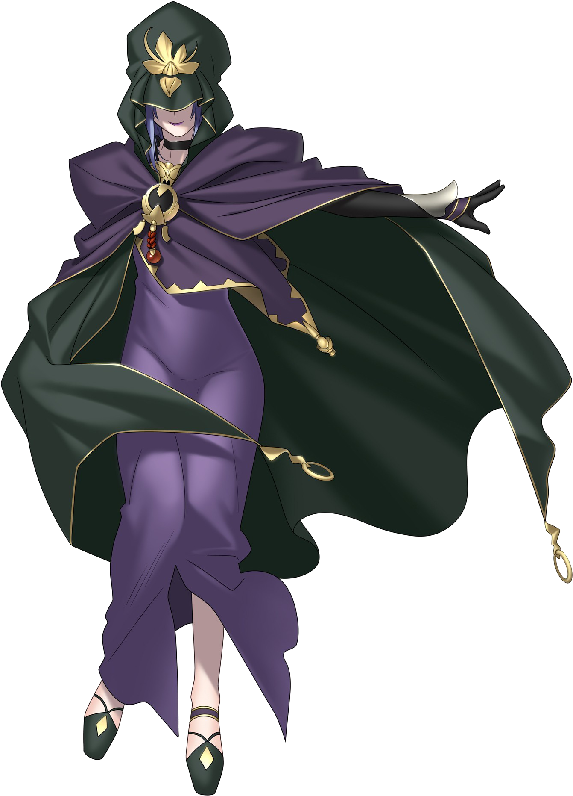. Puis, s’adressant à Knuckles :
Caster : Pourquoi ne viendrais-tu pas à l’intérieur me dire ce qui te tracasse ? Peut-être pourrais-je
t’aider.
Knuckles jeta un œil à Assassin, qui haussa les épaules en réponse. Le Servant pseudo-samouraï n’avait pas
vraiment d’intérêt dans ce qui allait se passer, mais Knuckles interpréta ce geste comme un : "Elle est digne de
confiance, vas-y."
Knuckles : D’accord, faut que je remette mes idées en place de toute façon. Merci.
Répondit Knuckles, passant devant Assassin.
Le sourire de Caster s’élargit encore.
Amy Rose marchait dans une ruelle sombre. Bien qu’elle ne le sache pas, elle se trouvait dans un quartier
dangereux de Fuyuki, mais ce qu’elle savait, c’était que ses amis étaient introuvables. Heureusement, il n’y
avait pas de robots maléfiques à l’horizon — mais ce n’était qu’un maigre réconfort. Seule dans un endroit
inconnu, Amy ne devait son calme qu’à l’expérience acquise au fil des années face à l’inconnu.
La hérissonne rose frissonna. Il faisait peut-être trop frais. Il y avait un froid dans l’air qu’elle n’aimait
pas du tout.
Amy : Je me demande comment Sonic et les autres font pour se balader juste avec des gants et des
chaussures…
Pensa Amy, avant de remarquer quelque chose d’étrange au loin.
C’était un être humain aux cheveux courts et rouge clair, vêtu d’un costume rouge foncé. En s’approchant, Amy vit
qu’il s’agissait d’une femme, même si la distinction n’était pas évidente dans l’obscurité — les courbes légères
de sa silhouette l’aidaient à s’en rendre compte. Une des manches de son costume avait disparu, arrachée
apparemment. Elle semblait assise contre un mur, fixant son bras nu.
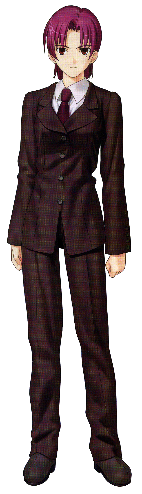
Amy : « Euh… vous allez bien ? »
Appela Amy en s’approchant de la femme. Elle réalisa rapidement que la question était un peu bête, car cette
inconnue, au vu de l’état de ses vêtements, avait clairement été dans une bagarre. Et d’après les bleus et les
coupures qui couvraient son corps, ça n’avait pas été une petite bagarre…
Amy sentit quelque chose de collant sous son talon, et baissa les yeux. Il faisait sombre, mais il semblait que
c’était un liquide rouge…
Amy entendit un bruit sourd, et vit que la femme venait de s’effondrer. En associant le liquide rouge et l’état
de la femme, Amy comprit…
Elle poussa un cri de surprise et se précipita au secours de l’inconnue. La soulevant tant bien que mal avec sa
petite carrure, Amy regarda autour d’elle, tentant de déterminer quoi faire et où aller.
Amy : Hé ! Il y a quelqu’un ?!
Cria Amy dans la nuit.
Amy : Quelqu’un ?! »
Comme personne ne répondait, elle décida que la seule chose logique à faire était de s’en occuper elle-même.
Traînant la blessée hors de la ruelle aussi confortablement que possible, Amy lui dit :
Amy : Ne t’inquiète pas, je vais te trouver de l’aide, tiens bon !
Elle était tellement concentrée sur sa tâche, Amy n’entendit pas Bazett Fraga McRemitz murmurer :
Bazett : Mon… bras…
Le chaos n’était pas la destruction. Le chaos n’était pas l’anarchie. Et il ne s’écrivait certainement pas avec
un K. Le chaos, c’était le changement. Que ce soit une légère brise devenant un raz-de-marée, un énorme météore
ayant peut-être anéanti les dinosaures, ou même une simple décision, le chaos représentait le facteur inconnu
qui faisait en sorte que les plans les mieux préparés — ceux des souris comme ceux des hommes (et des femmes
aussi, certaines étant très pointilleuses sur les détails inutiles) — ne se déroulent jamais sans accroc. Des
bosses sur la route de la vie.
L’une de ces bosses était en train de se former dans l’inquiétante demeure Matou, déclenchée par l’énergie
libérée par la tentative déformée de Projection de Shirou. Dans sa chambre lugubre, Sakura Matou se réveilla en sursaut. Frissonnante, elle
tenta de comprendre ce qui venait de se passer. Elle avait senti une étrange secousse, comme une décharge
statique… mais à l’intérieur de son esprit. Elle espérait que son grand-père n’avait pas décidé de lui offrir
une nouvelle "séance d’entraînement complémentaire". Dieu savait qu’il en faisait déjà bien assez…
??? : Tu n’arrives pas à dormir, hein ?
Les yeux de Sakura s’agrandirent et elle alluma la lampe. Elle regarda autour d’elle et vit quelque chose de…
particulier.
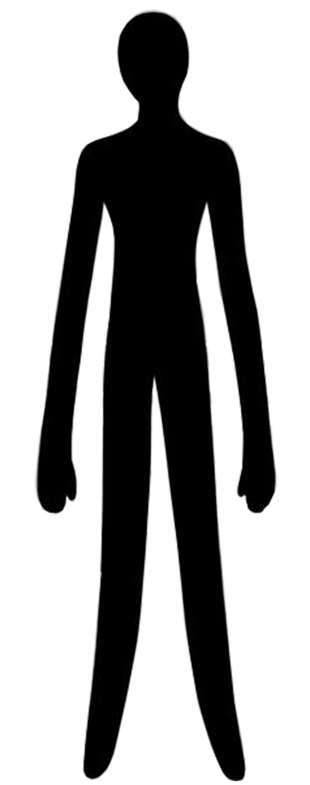
Une silhouette obscure se trouvait maintenant dans sa chambre. Non, ce n’était pas une silhouette obscure…
c’était une ombre. Elle ressemblait à une forme vaguement humanoïde assise au centre du sol. Au début, elle
était totalement noire, sans aucun détail… puis un croissant rouge apparut sur ce qui semblait être sa "tête",
formant une sorte de sourire étrange.
Sakura : Qu’est-ce que tu es… ?
Chuchota Sakura.
La chose-ombre se mit à trembler, émettant un bruit de « hn-hn-hn ». La première pensée de Sakura fut que la
créature pleurait, mais elle se rendit vite compte que c’était tout le contraire : l’ombre était en train de
rire.
Sakura : Qu’est-ce que tu es ?
Répéta Sakura, cette fois plus fort.
L’ombre pencha sa tête informe, puis se tourna vers Sakura. Sans yeux, la jeune fille n’arrivait pas à discerner
ses intentions.
Puis une voix s’éleva depuis l’ombre. Elle était faible, mais sa résonance toucha quelque chose au plus profond
de Sakura.
??? : J’ai entendu l’appel et j’ai répondu à l’invocation.
Disait l’ombre.
Avenger : Je suis le Servant Avenger.
TO BE CONTINUED
Tiger Dojo
Taiga : Hoohhh ! Bienvenue, les petits ! Vous allez bien ? Apparaissant maintenant des confins de l’espace,
voici le Tiger Dojo ! Je suis votre instructrice, Fujimura Taiga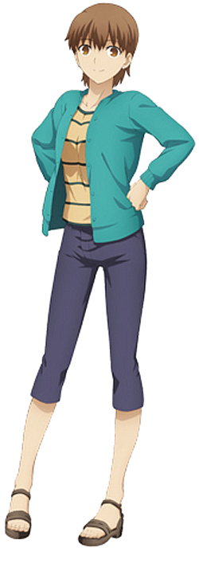, Gaaow !
Illya : Et l’élève numéro un, Illya ! Merci de me traiter avec respect !
Taiga : Je suppose que vous vous demandez ce qu’on est en train de faire. Élève numéro un, à toi de répondre
!
Illya : Entendu ! Dans le visual novel original Fate/Stay Night, le Tiger Dojo était un coin spécial qui
donnait des
astuces et des conseils aux joueurs idiots dont les mauvaises décisions avaient conduit Shirou à une
mauvaise fin.
Mais maintenant, nous sommes ici pour répondre à toutes vos questions concernant ce crossover. En résumé,
nous
sommes la structure qui permet à la maison “Fate” de tenir fièrement debout !
Taiga : Excellent ! Oui, ce Dojo est le fondement qui soutient “Fate” ! Maintenant, notre première question
nous vient de Mademoiselle Miyu. Elle écrit :
« Cher Tiger Dojo, comment se fait-il que Sonic puisse affronter Lancer si facilement ? Les Servants ne
sont-ils pas censés être hors de portée des capacités humaines ? »
La réponse est simple : Sonic est tout simplement génial !
Illya : Cette réponse est trop simpliste…
Taiga : Sonic combat des robots tueurs, des démons destructeurs, des mutants, des génies maléfiques, et même
des dieux ! Il dépasse de loin tout ce qu’un humain peut faire ! Lancer était surclassé dès le départ !
Illya : Je ne sais pas… avant le Boom, Sonic ne semblait pas vraiment blesser Lancer… c’était plus comme s’il
l’agaçait.
Taiga : Faux ! (frappe Illya)
Illya : Aïe… le redoutable Tora-Shina… ! Le sortir comme ça, sans prévenir… !
Taiga : Sonic prolongeait le combat parce qu’il croyait que Lancer était un humain ordinaire. Une fois qu’il a
compris que retenir ses coups ne suffirait pas, il a sorti sa technique fatale et a gagné haut la main. En
plus, il est possible que l’arrivée des Chaos Emeralds à Fuyuki ait perturbé le flux naturel d’énergie
magique.
Illya : Comme lorsque Shirou a failli se tuer en tentant de faire de la magie ?
Taiga : Exactement. Et souvenez-vous : même si Sonic est habitué à combattre des types bizarres comme Lancer,
Lancer, lui, n’a jamais affronté quelqu’un comme Sonic. C’était une question d’expérience supérieure. Leur
prochain combat pourrait être plus équilibré, maintenant que Lancer sait à quoi s’en tenir. À toi de lire la
prochaine question, élève numéro un !
Illya : Celle-ci vient de quelqu’un qui s’appelle Ruby. Elle écrit :
« Je veux que Saber se batte contre un robot ! »
Hé, ce n’est même pas une question !
Taiga : Saber se battra contre un robot, c’est certain ! Et les autres aussi ! Élève numéro un, donne
l’avertissement légal !
Illya : Sonic appartient à SEGA, et Fate appartient à Type-Moon.
Taiga : Cela conclut notre session de questions-réponses ! Je vous retrouve à la prochaine séance
d’entraînement !
 ,
une magnifique chevalière, qui lui avait sauvé la vie face à Lancer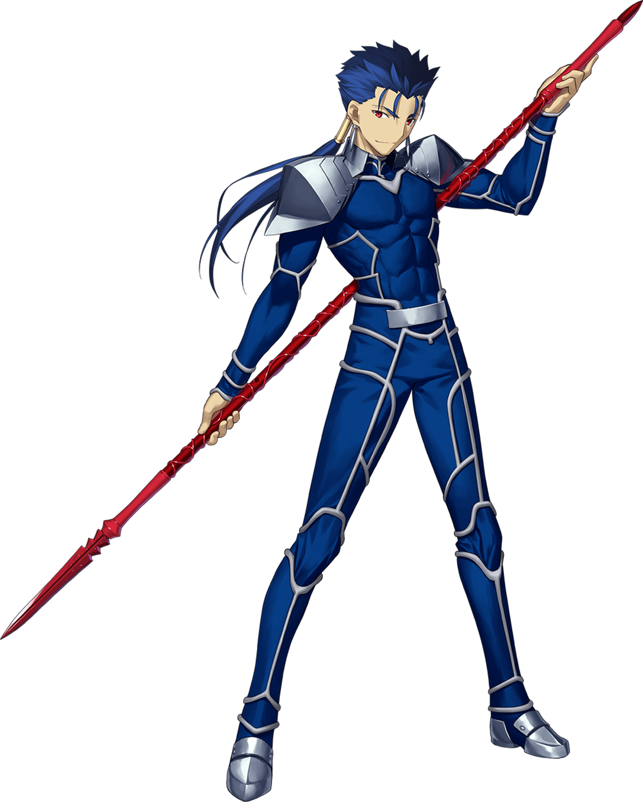.
Juste après, Saber avait attaqué
,
une magnifique chevalière, qui lui avait sauvé la vie face à Lancer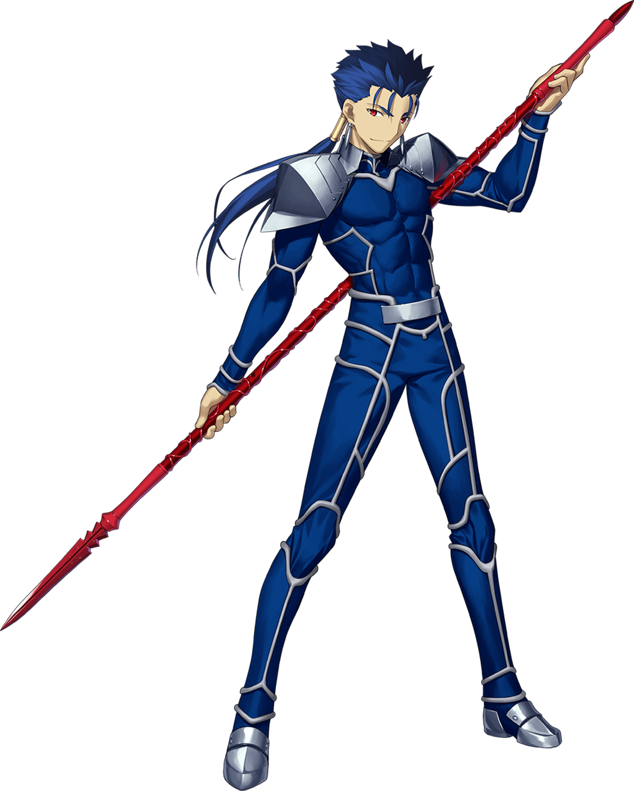.
Juste après, Saber avait attaqué  , était
la Maîtresse d’Archer — et une mage bien plus accomplie que lui. Plutôt que de continuer le combat, Rin avait
conduit Shirou à l’église de Fuyuki pour qu’il s’enregistre en tant que participant à la Guerre du Saint Graal.
De la bouche du responsable de l’église, Kirei Kotomine
, était
la Maîtresse d’Archer — et une mage bien plus accomplie que lui. Plutôt que de continuer le combat, Rin avait
conduit Shirou à l’église de Fuyuki pour qu’il s’enregistre en tant que participant à la Guerre du Saint Graal.
De la bouche du responsable de l’église, Kirei Kotomine ,
Shirou apprit la vérité sur le Grand Incendie d’il y a dix ans : il s’agissait du résultat final de la
précédente Guerre du Graal. Réalisant que les morts actuelles n’étaient pas dues à des fuites de gaz, mais à un
Servant se nourrissant du mana de ses victimes, Shirou choisit de se battre aux côtés de Saber. Il n’était pas
intéressé par le Graal lui-même, mais ne pouvait pas laisser une autre tragédie se produire.
,
Shirou apprit la vérité sur le Grand Incendie d’il y a dix ans : il s’agissait du résultat final de la
précédente Guerre du Graal. Réalisant que les morts actuelles n’étaient pas dues à des fuites de gaz, mais à un
Servant se nourrissant du mana de ses victimes, Shirou choisit de se battre aux côtés de Saber. Il n’était pas
intéressé par le Graal lui-même, mais ne pouvait pas laisser une autre tragédie se produire.


.png)